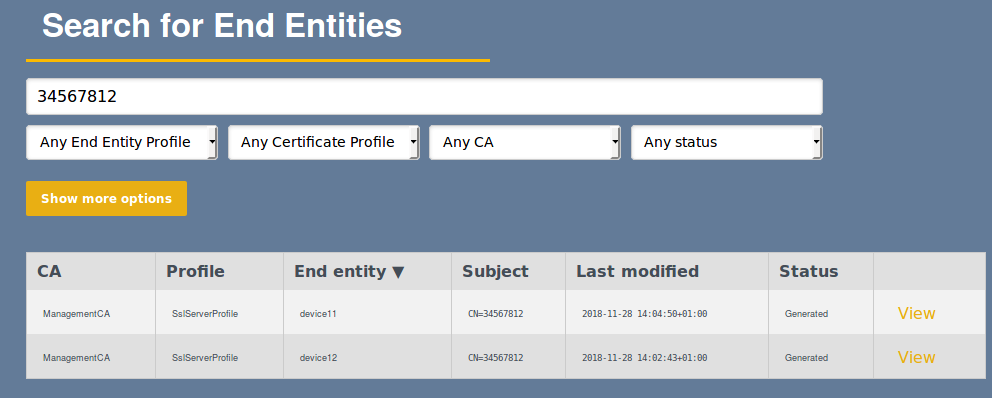

Using EJBCA as a Certificate Management System (CMS)
The following covers information on using EJBCA as a Certificate Management System (CMS), also known as Certificate Lifecycle Management (CLM), and gives a short overview of the CMS/CLM concept, followed by an outline of EJBCA functionality areas and third-party CMS/CLM products.
CMS Overview
The meaning of the CMS (or CLM) concept has changed over the years, creating a need to describe it in more detail, as it may mean different things for different people.
Originally, CMS was synonymous with Certificate Issuance and Management System, which is the CA technology for a Certificate Authority (CA). This is what EJBCA is. As the need grew over the years, more features have been consolidated into the term CMS.
According to Gartner a CMS is:
"Certificate management system software is used to discover, identify, track,
notify, and ultimately automatically renew and audit the installation of X.509
certificates.”(Gartner, 2016)
Today the following main functional areas are available:
-
Knowledge of which entities need to have a certificate, and why.
Controlling costs of obtaining certificates.
-
Overview of certificates being active/used by end entities.
Assurance that end entities use only intended certificates, that is, do not have other valid certificates
-
Provisioning and activating of certificates on end entities.
Renewal of certificates on end entities.
-
Efficient way for relying parties to validate certificates.
Certificate Discovery
Not having a clear understanding of where, and how, certificates are used may cause issues such as service disruptions, security breaches, uncontrolled costs, and non-compliance.
In addition, many CMS use cases are related to performing the above functionality with multiple logically and physically separated CAs. For example, several Public CAs, for issuing publicly trusted web server certificates, and several internal CAs, installed with different vendor products.
Certificate Management can be performed using EJBCA itself, or using a third party CMS product that integrates with EJBCA. EJBCA supports the first four functions described above. The difference between using EJBCA itself and a third party CMS product is that EJBCA manages certificates issued and managed within the EJBCA instance and thus each EJBCA instance is its own certificate management system. A third party CMS product is typically used to manage multiple logical and physically separated PKIs, for example, certificates issued by one (or more) in-house EJBCA instances as well as certificates issued by one (or many) external PKIs such as publicly trusted CAs.
The following sections cover EJBCA CMS functionality areas and then the CMS Product Integration section outlines third-party CMS products.
EJBCA CMS Functionality
The following sections outline the CMS functionality offered within an EJBCA instance:
Certificate Ownership
Using EJBCA you control which entities are issued with certificates. The flexible configuration of certificate profiles, authorization and protocols allow you to strictly control what needs to be controlled and automate what needs to be automated.
Configuring different types of certificates for different end entity types and groups are controlled using Certificate Authorities, End Entity Profile Operations, and Certificate Profiles.
Role based access control is used to in detail control who, or what has access to manage the various types of certificates and end entity groups.
Approvals can optionally be used to enforce multi-person controls before a certificate is issued.
E-mail notifications can be used to notify certificate subjects, and administrators of issuance, revocations and approval workflow status.
The below examples give an overview of a small subset of options to control certificate issuance.
Manually managing certificate requests that require approval.
Manually Managing Certificate Request
Manually approving certificate requests in an approval work-flow.
Manually Approving Certificate Requests
Immediate download of the requested certificate.
Certificate Reporting
After issuing certificates there is also a need to be able to investigate, among other things, which certificates have been issued and when certificates expire. EJBCA provides search and notification functions in order to give insight into certificate use.
Note that the below screenshots only give an overview of a small subset of options to search and report.
The EJBCA RA provides rich search capabilities to search for both certificates and end entities, to among other things see:
Which certificates are issued to a specific end entity (for example a device, user or server).
Which certificates have been issued with a specified name, serial number, hostname and so on.

Which unique end entities have been registered with a specified name, serial number, hostname and so on.

Which certificates are about to expire within a specified time interval.
You can also configure a Service to report, by email, a defined period of time before certificates expire.
Centralizing reporting functions can be done by integrating with a log analysis tool. For more information, see Integrating EJBCA with Graylog.

Certificate Provisioning
Certificate Provisioning is the process of registering a device, generating keys, generating a certificate request, issuing the certificate and finally installing the certificate on the device. How this should be done is highly use case dependent and can vary from time-consuming manual processes to highly automated industrial, IoT or cloud processes. Provisioning typically refers more to the process on the device side than the process on the CA side. How this is done on the client-side naturally differs quite some. In general, the options are:
Built-in device functions, for example in your firewall, router and so on.
Client-side SDKs when you develop your own software on the device.
Client tools installed on the device.
Certificate Management Agents installed on the device.
During the provisioning process, the device uses a protocol to communicate with the CA, or RA, to enroll for certificates. EJBCA has wide support for the common protocols:
Available protocols are configured in EJBCA System Configuration.
Depending on the client, different protocols are used, and many devices have built-in support for one of the protocols. ACME is a new protocol, used to automate issuance and renewal of server certificates, where there are multiple different client tools available to install on servers and devices to handle provisioning. When it comes to SDKs there are also multiple options, for example:
BouncyCastle Java API, works on all Java devices (including Android) and supports several of the protocols above.
and many more
The SDK we support most closely is BouncyCastle, which is also the SDK EJBCA uses itself.
The following displays an example of the ACME REST-based protocol.

Certificate Management Agents are usually part of a CMS product and used in combination with that, see below.
Certificate Validation
Certificate Validation can be divided into two parts, verifying the certificate chain, and checking if a certificate is revoked or not.
Revocation validation is supported by EJBCA through the most common means of validating if a certificate is revoked or not:
When checking whether a certificate is revoked, clients either validate against the online OCSP service (query per certificate), or download the CRL (list of all revoked certificates) to determine the revocation status of a certificate.
Ability to validate the certificate chain depends on the client having the full chain to verify. In some protocols, such as TLS, the certificate chain is normally transferred as part of the handshake part of the protocol, but in some cases, the client may need to fetch CA certificates from the server.
In EJBCA validation services are packaged in the Validation Authority (VA), a single offering of both OCSP service and CRL download, as well as CA certificate download. The EJBCA VA contains the information needed by a relying party to verify and validate certificates (as long as the relying party has established trust in the Root CA).
Client support for certificate validation is in many cases built into the clients, and it is present in the common SDKs such as Bouncy Castle, OpenSSL, and others.
Certificate Discovery
In large organizations, it is very hard to keep track, and control, of certificate usage within the organization. Expiring certificates can be a cause of outage for important business services when the certificates have not been managed properly by a specific business unit. Certificate Discovery tools help to identify and locate certificates and provides reporting capabilities. Discovery is typically done by scanning networks, systems and applications, logging instances of certificates found. This can easily find public used certificates, such as server certificates. Client certificates are in many cases not accessible to network scanning and need to be discovered by scanning applications and registries, for example, Active Directory.
EJBCA does not provide scanning functionality to discover certificates not managed by the EJBCA instance itself. EJBCA has full control and knowledge about all certificates issued by itself when used as a CA.
CMS / CLM Product Integration
There are multiple third-party CMS products available to discover and control certificates issued by a multitude of CAs. Products in this sector provide different functionality, some are focused solely on discovery and others on providing full lifecycle management with support for integration into other IT systems such as load balancers, EMM and MdM systems, IoT devices, etc.
KeyFactor
Keyfactor’s certificate lifecycle automation and management platform, lets you manage the lifecycle of keys and digital certificates across your business.
KeyFactor has native integration with EJBCA using the REST API. For more information, refer to the PrimeKey press release Keyfactor and PrimeKey Partner to Enable Highly Scalable PKI for Modern Enterprise & IoT Deployments.
AppViewX
The AppViewX Platform is a modular application that enables the automation and orchestration of network infrastructure using an intuitive, context-aware, visual workflow. It is closed-loop and state-aware, capable of verifying that intent has been achieved and providing actionable insights and automated remediation.
AppViewX has native integration with EJBCA using the REST API. For more information, refer to the PrimeKey press release AppViewX and PrimeKey’s EJBCA-integrated certificate management solution.
3Key Company
3Key Company develops and maintains several add-ons to EJBCA Enterprise. The 3Key DMR add-on offers dashboarding, monitoring, and reporting add-on functionality to EJBCA helping organizations get the most out of their state of the art PKI.
For more information, see 3Key Dashboarding, Monitoring and Reporting Add-on and 3Key RA Profiles Add-on or the PrimeKey press release PrimeKey and 3Key Company announce a new partnership, delivering PKI and Signing solutions to protect business-critical digital assets.
Digitalberry
The Digitalberry BerryCert software automates digital certificate lifecycle management. BerryCert detects and automatically manages certificate renewal before the expiration date.
BerryCert has native integration with EJBCA using the WS API. For more information, refer to Digitalberry documentation on Integration of PrimeKey EJBCA
Lemur
Lemur is an open source CLM project originally developed by Netflix. Lemur manages TLS certificate creation. While not able to issue certificates itself, Lemur acts as a broker between CAs and environments providing a central portal for developers to issue TLS certificates with 'sane' defaults.
PrimeKey has developed a Lemur EJBCA plugin that enables native integration between Lemur and EJBCA, enabling Lemur to use EJBCA as the backend PKI seamlessly.
Venafi
The Venafi Platform is a full lifecycle management platform that discovers, manages and automates certificate usage in large organizations.
EJBCA Integration Driver
The Venafi platform has native integration into EJBCA using an Adaptable CA Driver, connecting to EJBCA using the Web Service API. Using the integration the Venafi Platform automatically handles management functions in EJBCA and can be seen as an advanced RA, from the CA perspective. This enabled an organization to manage all its certificate usage, including external and internal PKIs using a single platform.
Functions available in the Venafi-EJBCA integration includes:
Retrieval of CA certificates
Requesting and issuing certificates
Renewing certificates
Revoking certificates
Installing the Venafi-EJBCA integration Adaptable CA Driver is easily done by putting the driver script (EJBCA.ps1) and WSDL (ejbcaws.wsdl) in your Venafi Platform installation, configure a few variables in the driver including the EJBCA server address, set up the Adaptable Driver in the Venafi Platform and configure authentication, and finally associate the driver CA templates and policy inside your Venafi administration interface.
The Adaptable CA Driver can be supplied by Venafi or PrimeKey.
Importing existing EJBCA certificates
If you are setting up a new system, configuring the Venafi-EJBCA integration from the start gives you everything needed. If you install Venafi after you have been running EJBCA for a while, you may want to import all the issued certificates from EJBCA into Venafi.
Venafi has a method to import certificates from the filesystem, and you can export issued certificates from EJBCA using a database query. After exporting all certificates from EJBCA, this can be used to import them into the Venafi Platform.
The Base64 encoded data of certificates are stored in the column named base64Cert in the CertificateData table. You can get it by SQL like:
select base64Cert from CertificateData where issuerDN='CN=MyCA,O=MyOrg,C=SE';To export all certificates from the database into PEM format (e.g. as zip) with status (active, revoked) from all CAs with time period for selection, use a script like the following:
#/bin/shhost=localhostuser=ejbcadatabase=ejbcaissuerdn="CN=MyCA,O=MyOrg,C=SE"outputDirectory=.read -s -p "Enter database password: " passwordmysql -u$user -p$password -h $host $database -s -e "SELECT serialNumber, CertificateData.status, base64Cert, name FROM CertificateData JOIN CAData ON CertificateData.issuerDN=CAData.subjectDN WHERE CertificateData.issuerDN='$issuerdn';" | while IFS=$'\t' read -r serialNumber status base64Cert issuerName; do mkdir -p $outputDirectory/ejbca_certificate_export/"$issuerName"/"$status" file=$outputDirectory/ejbca_certificate_export/"$issuerName"/"$status"/"$serialNumber".pemecho "-----BEGIN CERTIFICATE-----" >> "$file"echo "$base64Cert" | sed 's/\\n/\n/g' >> "$file" echo "-----END CERTIFICATE-----" >> "$file";doneif [[ -d $outputDirectory/ejbca_certificate_export ]]; then zip -rq certificate_export.zip $outputDirectory/ejbca_certificate_export rm -rf $outputDirectory/ejbca_certificate_exportfiThis results in a zip file where directories are created for the CA (Common Name) and in the next level status (20 = active, 40 = revoked).
You can also do it for all CAs by removing the clause WHERE CertificateData.issuerDN='$issuerdn'.